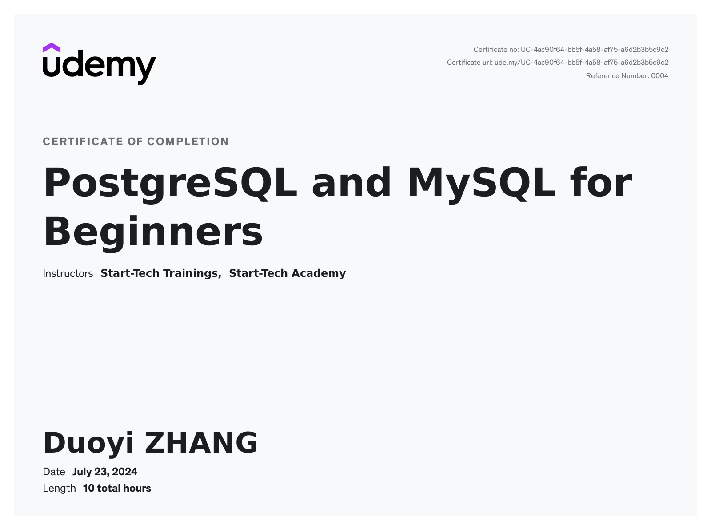
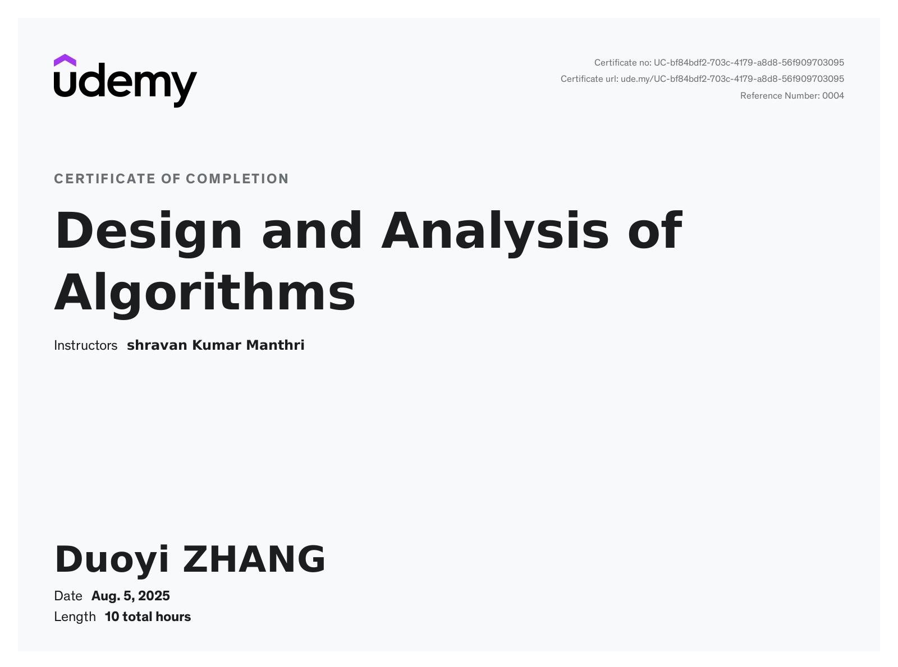

Menu
Current: Dalhousie University
-September 2023 - Present
I am currently studying Computer Science at Dalhousie University, where I am building a strong foundation in core areas such as programming, algorithms, and systems. My education at Dal has helped me develop problem-solving skills and a deeper understanding of how software is designed and implemented in real-world applications.
-See more about Dalhousie visite www.dal.ca

Here are the skills I have
IDE That I Have Worked With
|
/Programming Language I Know
|
Certificates
|
The first certific I would like to share is the Data Structure and Algorithms from Udemy. Completing a Data Structures and Algorithms certificate strengthened my problem-solving abilities and significantly improved the way I approach coding challenges. It helped me write more efficient, organized, and scalable code by reinforcing key concepts such as algorithmic thinking, time complexity, and data organization. This experience has made me more confident when tackling complex problems and building reliable software solutions. The second certific I got is the MySQL/PostgreSQL, which helped me develop a strong understanding of relational databases and data management. Through this certification, I learned how to design efficient database schemas, write complex queries, and manage data reliably. It strengthened my ability to integrate databases into applications and build data-driven solutions. I also earned a certificate in Computer Networking, which strengthened my understanding of how data is transmitted across networks. Through this certification, I gained experience with networking fundamentals such as TCP/IP, routing, switching, and basic network security concepts. It helped me better understand how systems communicate I completed a certificate in Design and Analysis of Algorithms, which significantly improved my problem-solving and coding skills. Through this certification, I studied key algorithmic strategies such as Divide and Conquer, Greedy algorithms, Dynamic Programming, and Backtracking. It helped me understand how to design efficient algorithms, analyze their complexity, and apply them to solve challenging computational problems effectively.  |